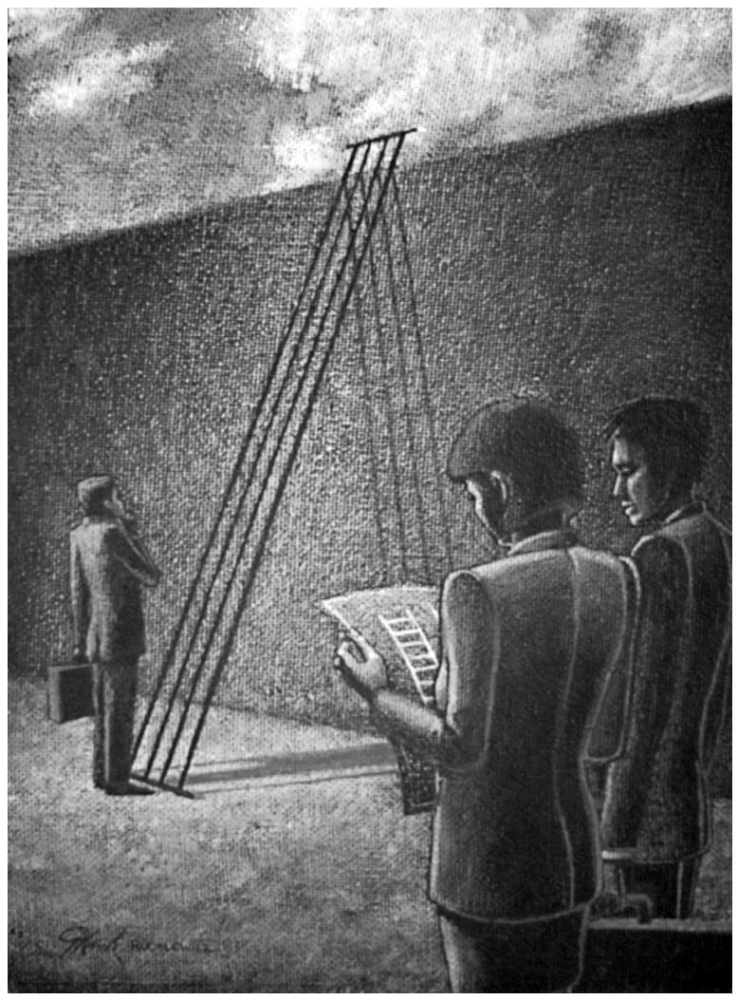

（《道德经》第十一章）
我在第七章指出，如果要理解领导力到底如何运作，就需要把“领导者”交还给“领导之船”——事实上，需要把众人都还原到领导之船上。但同样危险的做法是从集体或分布式领导中排除领导者，认为——只需更加密切地合作——我们完全能够共同解决这个世界的诸多问题，而无须求助领导者。在本书的最后一章我想指出，和领导者不需要考虑追随者的臆想一样，这也是错误的，不过这里我想先让领导者恢复其领导力。
在全球化问题蔓延的时代——无论是金融、环境、宗教、社会还是政治问题——对后英雄主义领导力的呼唤愈发强烈。人们（以多种方式）抛弃英雄主义领导风格而选择的其他途径都在暗示：领导并非必要，或者它可以在集体内部平均分布，或者一旦冲突的源头——无论是马克思所说的私有财产，还是宗教——消除了，它也就变得不再必要，又或者英雄主义领导是组织的结果而非原因。为了逃避英雄主义领导的魔爪，我们现在似乎正被它显而易见的反面弄得神魂颠倒——分布式领导：在这个后英雄主义的时代，人人都是领导者，因而就没有领导者了。
关于领导力是社会或组织中一个可有可无的方面，或者它应该被适当“分布”（以便共同承担领导责任）或彻底“分散”（以便由于人人都是领导，最终无人领导）的观念早有先例。事实上，很多狩猎——采集者社会——例如坦桑尼亚的哈扎部落——都没有一个单独的正式领导者，领导责任是分开的，任何个人都可以“领导”某一次狩猎，或者提议迁徙到某个新的领地，等等。很多这类狩猎——采集者社会只是在殖民势力的逼迫之下才开始采纳正式的领导体系——很多美洲印第安人部落就是例子。然而就连那些没有制度化领导者的文化，也保留有一些领导元素：因此，即便是所有美洲印第安文化中机动性最强、最反权威的科曼奇人，也会在战争、狩猎或其宗教要求的其他情形下服从临时的领导者。同样，努尔人也符合伊凡——普理查 [62] 所谓的“裂变”制——以家庭为基础的群体机动组合，可以与其他家庭群体不断结盟和新组同盟，只是没有制度化的领导。
这类受限的领导形式在西方就更加罕见了，而且由于我们早已从狩猎——采集者社会经过所谓的“军阀时代”（大致是从最后一个冰川时代末期到工业化时期），经历了与之相关的定居农业，一直发展到大规模工业社会，领导形式显然已经发生了巨大改变，以致制度化、行政化的民主和官僚体制已经替代了由政治、商业、文化和军事领导者（很多人认为这些是军阀时代的男性领袖的典范）组成的临时网络为特征的军阀制度。然而在21世纪，当抗解问题看似正在全球蔓延，或许通过协作式领导才能更好地服务世界，它也就以一种治理体系替代了20世纪的军阀们，在那些传统上深受军阀行为之害的人看来，该治理体系也更加合适。
军阀（包括绝对君主政体和政治独裁政体）与各种为其提供支持的神职人员之间的联系往往被用于捍卫领导权，理由就是它与某种神祇之间有着神圣的联系。无论该联系是君主的“天赋神权”，还是世俗领导者自称为半人半神，甚或追随者为其领导者归属的非凡地位，显然，领导力与神圣范畴有着一定的联系。然而这一联系有多重要，此外对于放弃正式的个体领导者、重新分配权威而言，这一联系又意味着什么呢？
有人或许会认为，西方世界始于启蒙运动的世俗化过程通过政教分离，消解了领导力的神圣性质。尼采在《快乐的科学》一书中断然宣称，隐喻的上帝之死或许能够让人类获得解放，广阔的大海就是一块画布，可以在其上绘出新的开端。因此有人或许会得出结论说，社会的世俗化将开启全新的领导力观念，再无须对神一般的领导者献媚。但尼采还提出了其他的疑问：
（1991年版，第125节）
各种宗教原教旨主义的重新抬头，已经无情地打破了隐喻的上帝已死的臆测，但在卡尔·波普尔看来，要想回答这个问题，就必须提出另一个问题：如果上帝死了，那么“谁坐上了他的宝座？”这一对领导者的重新建构——或者用“重新供奉”一词更合适些——意味着，或许领导力本身就被锁定在神圣范畴中无以逃遁，如果是这样的话，那对于权限的彻底分散又意味着什么呢？
这个问题与其说事关领导力的神圣性质，倒不如说是关于应该如何协调社会生活——因为如果可以找到一种不需要领导力的生活方式，那么它的神圣性质就不再是组织的必要前提了。然而讽刺的是，“另类”社会一贯的老调重弹不过是颂扬整个社会的神圣或将自由“奉为神圣”的调子。神圣的形式完全可以发生转变，且解读方式千差万别，但从根本上说，它就是不可侵犯的。事实上，否认任何其他人拥有高于自己的权限——因为那样做可能会损害自己的人格——产生了一种对立的虔诚，信奉个体或社会的神圣性质。或者按照乔·弗里曼（1970年代美国女权主义领袖之一）的说法，无结构的结果不是摆脱了结构或权限（父权或其他任何权力），而是形式结构变成了非形式结构，而非形式群体和民兵组织的独裁潜力无限。弗里曼指出，民主的结构化总要好过无结构状态，因为至少那种结构更加透明，也可以改变。但是同样，权限的下放和分配及任务轮换需要所有参与者愿意且能够贡献出大量的时间和精力。在有些人看来，这种精力可能是白费了：例如，弗莱彻就指出，新的后英雄时代模型虽然被认定为更偏于女性主义的模型，但从根本上说，它们仍然根源于男性组织，在那里，协作、关系建立和谦卑被看成是软弱的表现而非领导力。的确，各类组织的第一梯队仍然主要掌握在男性手中，因此后英雄时代的领导力模型不过是后英雄时代的英雄模型。
在有些人看来，这与其说是“领导力”问题，不如说是哪一种“领导力”的问题，特别是那些与分布式领导的发展有关的领导力面向，在分布式领导中，领导权掌握在集体手里。雷林试图将分布式领导或有多位领导者的组织与传统组织进行对比，认为在有多位领导者的组织中，领导力是同时发生的集体行为，而非一连串的个人行为——很多人都参与其中，而非仅限于有正式职位的人；领导风格是合作型而非控制型；是富有同情心的而非不带感情色彩的；这产生了一个社团而不再仅仅是一个组织。根据格伦的说法，分布式领导有三个显而易见的后果：第一是“协同行动”，也就是领导层协力，使得分布式领导的整体强于各部分相加；第二是领导的界限变得更加模糊和彼此渗透，鼓励更多的团体成员参与到领导其所在组织的行动中；第三，它鼓励人们重新思考组织内部的专业能力问题，拓展了对团体开放的知识的水平。总而言之，领导力变得不再为某一位正式领导者所有，而成为组织、网络或团体的一项新兴资产。
我无意为“英雄主义领导力”辩护，但这里还有一个尚待解决的难题：如果英雄主义领导者自古以来便存在于我们中间——且要为有史以来发生在人类身上的大多数悲剧负责的话——为什么我们直到现在才意识到他们不可靠？而如果我们自他们出现以来便一直知道他们不可靠，为什么一直没有想出长期、大规模的有效备选方案？换句话说，上述假设的后英雄时代领导力是不是一个可行的备选方案？
当然，这可能是一个非常西方化的表述，显然在不同的文化中，关于领导力的观念和关于神圣的概念往往截然不同——这个话题太大，本书的篇幅远远不够。的确，美国人关于何为领导力、何为神圣的看法似乎往往与英国人大相径庭。在很多北欧社会，讽刺，不，毁谤宗教领袖或许是合乎礼数的，但在伊朗或美国显然不行。因此，我并不是暗示西方或英国关于神圣与领导力之间关系的论述放之四海而皆准，而是想指出，很可能在各种不同的文化中，这两个现象都有着重大联系，虽然在世界各地，这些概念及其联系的具体性质迥然相异。我还想指出，神圣并非房间里的大象——它不是显而易见但人们讳莫如深的东西，而是房间本身，是领导力发挥作用的空间。这就是很少有人提出神圣问题的原因之一，因为领导力正是在神圣所构建的框架中运作的。
“神圣”一词的词源提供了关于其性质的线索，但并没有提供解释（《柯林斯英语词典》，2005年；《牛津英语词源词典》，1966年）。英语“sacred”（神圣的）一词来源于拉丁词语sacer ，意为“神圣的、圣洁的或不可碰触的”，其本身又来源于另一个拉丁词语sancire ——“奉为神圣，专为宗教目的，被尊崇为圣洁，不受暴力攻击；使分离”。如此看来，神圣性的一个要素就在于神圣事物与世俗事务之间的距离或差异。“亵渎神圣”——这个词来源于一个拉丁语复合词，意为“偷盗圣洁之物”——是指超越这一界限并玷污了神圣。的确，“hierarchy”（等级制度）一词的原意就是“圣洁的君权”：在这个词起源的希腊语中，arkhos 意为“君权或统治者”，而hierós 意为“圣洁的或非凡的”。Hierarkhí ã 是一种宗教典仪的等级排序，因此“等级制度”这个概念就是确保神的（或神职的）领导的神圣组织空间。拉丁语sacerdos 意为“神父”，而英语的“sacrifice”（献祭，牺牲）源于拉丁语复合词“使圣洁”，因此神圣性的第二个要素与那些被认为与神灵最接近之人——神职人员——献祭这一基本事务有关：正是献祭才让事物变得神圣——它行使了领导力。最后，“神圣”是指“一种尊敬或敬畏的态度”，“一种在神灵面前的静默”。那一静默似乎暗指信徒因为恐惧而被噤声，因为其神灵，或者神灵的代理人，转移了任何与存在有关的焦虑，或者在古希腊的版本中，神灵本身就结束了凡俗之人关于存在的一切恐惧。
因此，词源表明，领导力的神圣面向至少包括三个特质与关于领导力的争论有关：“分离”——将圣洁与卑俗之物分隔开来；“献祭”——使事物变得圣洁的行为；以及宗教或世俗领导者让追随者保持“静默”，不敢说出自己的恐惧或异议。下面我们先对领导力的这一神圣面向来一次短暂的寻幽访胜，然后再考察这个面向是否必要，及其对没有领导者的社会生活意味着什么。
分隔、邻近与领导力之间的相关性历史悠久。拿莎士比亚的《亨利五世》来说吧，在阿金库尔战役前夕，“那一夜，（大小三军，不论尊卑）多少都感到在精神上跟亨利有了接触”：这一点之所以被看得如此重要，恰是因为追随者们很少能够接近其领袖，遑论有所接触。君主们当然往往都是通过与神灵的联系来确立自身统治的合法性，因而他们只对神灵负责，所以既然前提是他们整个人都有神圣性，那么说他们的接触具有神圣性在逻辑上也就顺理成章了。这些差别——世俗与神圣的分隔——必须通过界限分明加以保护，还可以通过阻止人们直接或在无中介的情况下接近领导者，或者领导者的特殊着装或其他差别标志得以实现。当然，不同的文化会表现出不同的疏远机制，确实，它们各自对于什么样的距离是可以接受的观念截然不同，但有些疏远——不管是象征意义上的还是现实层面的，也不管我们考察的是任务导向还是人员导向的领导力——似乎普遍存在。例如，众所周知希特勒的制服十分朴素，这让他有别于身上挂满勋章、装饰华丽的其他纳粹领导者，而使他跟普通的“人民”联系在一起，虽然他根本不可能是“他们中的一员”。
领导力涉及一些领导者与追随者之间保持“距离”的机制，这一观念并不稀罕，而关于平易近人的领导者要比高高在上的领导者好得多的信念更是深入人心。相反，马基雅维里敏锐地注意到，要防止追随者们看到其领导者的“真实”面目，保持距离是个很有用的做法，因为：
对于那些希望成为领导者的人，这一点意味深长，因为能够把控好距离，特别是能够牵制他人不要近身，让自己的一举一动存在于他们的视线之外，对于保持领导的神秘性至关重要——就像奥兹国的巫师，在被揭去了掩饰其“普通”性质的面纱之后，就变得一无所长了。
疏远还可以方便领导者执行一些卑鄙龌龊但十分必要的任务，并方便其在一定的空间之外观察全局（距离追随者或行动太近时则很难看到）。海费茨和林斯基的隐喻——“站在阳台上”去观察（组织的）舞者们创造的队形，就精准地捕捉到了这一要点。
虽说在历史上，疏远对领导力而言一直都很关键，但西方各民主政体在当代的发展方向却是——至少在媒体全天候的监督之下——创造一个社会距离最小的领导形象，因此托尼·布莱尔会穿着套衫、端着一杯茶出现在唐宁街的官邸外与媒体对话——虽然我们很少有人能以那个形象出现在全世界媒体的面前，更没几个人会当面叫他“托尼”，不管是朋友还是仇敌。
然而尽管如此，柯林森指出，过于关注魅力型领袖让我们忽略了这样一种可能性，即距离还会成为追随者的重要机会，用以“建构其他更为对立的身份和工作场所反主流文化，从而表达他们对领导者及其与追随者之间距离的怀疑态度”。有人用幽默来拉开追随者与领导者之间的距离，就是个尤其明显的例子，虽然同样，那样做也会鼓励追随者默许其领导者的领导，因为追随者有渠道表达自己的失望，而不是组织反抗。
领导者与追随者的分隔还凸显出领导力固有的不平等性质，虽然所有关于赋权式、分布式、民主式或参与式领导的说法已经模糊了我们的视线。哈特及其同事们指出，这一不平等观念实际上既是合理的，也是必要的，它产生了双方互利的不平等，前提是要有一定的防护措施。作为领导力核心的不平等必须 被合理化——虽然平等本身往往被认为是合理的——这一点或许也能解释为什么我们似乎总觉得领导力是神圣的，因为它必须被看作是神圣的，才能保持其合理性。
这或许还能解释对那些鲁莽地挑战被公认为神圣的领导力之人，为什么需要使用一定程度的暴力，因为只有在严厉惩罚了那些用行为破坏神圣之人——亵渎神灵之人——之后，才能保持神圣不被侵犯。于是福柯在《规训与惩罚》一书的开头，对达米安因谋刺国王而被判处酷刑进行了详细的描写。亵渎神灵——企图跨越神圣与世俗之间的分隔；的确，这就是玷污神圣——在领导力的建构中起到了至为关键的作用，也被看成是对领导权的致命一击。举例来说，戈尔巴乔夫对苏联共产党的批评——他的亵渎——就打开了最终导致苏联解体的水闸。在他公开发言批评之前，很少有人敢于说党的坏话，而一旦他给了其他人许可，让他们也参与批评，共产党的神圣性质就受到了无法补救的破坏。托尼·布莱尔或许也可作为一例，他在1994年的工党大会上废除了《党章》第四条（生产、分配和交换资料的公有制），正式开启了工党转变为新工党的进程。
因此，神圣性的一个重要方面就是，它必然会把神圣与世俗分隔开来；二者必须保有距离，分隔才有意义可言；当然，该分隔的性质非常灵活，在不同的文化中也迥然相异。事实上，“差别”而非“距离”可以更好地帮助我们理解这里的“分隔”的重要意义。领导者和被领导者之间的物理距离或象征距离可大可小，但二者的差别是成功的关键。换句话说，是否只要消除了这一差别，从而使人人都——或者无一人——是领导者，领导力本身也就消失了？这不是说在某些特定情形下，有些组织形式离开了领导力就无法存续，而是说离开了差别，领导力本身就无法存续。差别是领导力的执行要素，而非领导地位的可有可无的点缀。
虽然它让很多现代人感觉极其不适，但毋庸置疑，祭品的使用在古代社会非常普遍。在阿兹特克人披着牺牲品的皮，把成百上千的牺牲品献给他们的太阳神的同时，罗马人、古希腊人、凯尔特人、迦太基人、非洲人、亚洲人，看样子还包括其他各个族群和种群，也都曾染满了人和动物的血来安抚各自的神灵，保护部落，确保子孙满堂或风调雨顺，确保统治部落不会来摧毁自己的土地，或者只为确保被征服的追随者归顺。古希腊的待罪者传统就是把寻找替罪羊的做法仪式化，是社会在面临战争或饥荒威胁时，把人类牺牲品驱逐甚或处死的仪式。
寻找替罪羊的仪式上的必要性构成了勒内·吉拉尔 [65] 著作的基本核心，且与模仿——所有的人都有互相模仿的欲望——的作用有关。这一对他人的占有最终导致了对他人的征用、一种无法避免的敌对、一种侵略性的反应，以及最终的结果：普遍的社会暴力。吉拉尔指出，数千年来，人类一直通过牺牲个人的做法来遏制这种“天然”的社会暴力倾向。结果，原始的谋杀替罪羊的做法让人们免除了更大规模的社会暴力，产生了暂时的和平——直到下一轮模仿式的敌对和暴力蔓延，让人们必须寻找下一个替罪羊。因此，霍布斯所说的“所有人反对所有人的战争”的唯一解决方案，就是把焦点缩小成“所有人反对一个人的战争”。而克莉斯蒂娃当然是对的，为确保男人的领导权，女人往往会成为被献祭之人，举例来说，所谓的“荣誉处死”往往就暗指这一点。当然，献祭者往往也会成为被献祭者，想想英格兰的查理一世和法国的路易十六等君主们，就是最明显的例子，但有些领导者的政策本是为了推翻这些君主，却也难逃其害——罗伯斯庇尔甚至克伦威尔都是如此，后者倒是自然死亡，但后来尸体又被挖掘出来挂在锁链上，他的头被砍下来，悬挂在威斯敏斯特教堂外的柱子上。
不过我们倒也不必局限于真实的死亡案例，仿佛不这样便不必承认，牺牲至今仍然是领导力的一个重要组成部分，特别是在将领导者或追随者作为替罪羊时：民主政体往往会在政策失败时将其政治领导者作为替罪羊；当问题出现时，CEO们也往往会把自己工作场所中的某个环节作为替罪羊，或者说他们自己也会被股东当作替罪羊。如果他们的上司被剥夺了职权，被降职、解雇或锒铛入狱，那么即便替罪羊们最终没有被献祭，一般也会被流放、被厌弃、被涂上焦油或插上羽毛，而在很多这类行动之前都会有某种形式的公审大会，以便献祭仪式的范围囊括尽可能广泛的公共空间：献祭不仅必须进行，还必须当众进行。同样，非流血型献祭也可以是领导者的自我牺牲。例如，2009年福特公司的时任CEO艾伦·穆拉利就曾承诺，如果国会通过了财务救助，他愿意将自己的管理者年薪降到一美元。
当然，我们每个人每时每刻都在做出牺牲——我们为清理待复电子邮件牺牲了午餐休息时间，为清理草坪牺牲了周日早上的懒觉，等等。但我这里所指的牺牲是指为了集体利益，不管你如何定义集体利益。所以我们那些世俗的个人牺牲不会对领导者和追随者之间的关系产生任何影响，因而不在我们的讨论之列。为了自己的健康放弃一块奶油蛋糕，跟为了提升蛋糕房的集体士气牺牲一个烘焙师可不是一个概念。献祭不是某一位邪恶或疯狂独裁者所做的令人遗憾或令人难堪的行为，而是所有领导形式的基本表现机制。献祭建构了神圣空间，没有这一空间，领导力根本就不可能存在。
除了提供思考空间之外，静默的神圣方面还包括好几个原则：消除反对之声和消除焦虑之声。已经有大量文献论述了前者的作用（例如延伸阅读部分列出的柯林森和阿克罗伊德的著作），这里就不多费笔墨了。
大体上，领导力具有神圣性的概念与存在主义观念背道而驰，后者是从哲学谱系的另一端出发来考察世界的：我们不是神的计划的成果，而是我们自己有意识的自由行为打造的。然而这一观念就意味着，所有对存在没有把握和没有目的而造成的焦虑，恰恰是责任的负担为何如此沉重的原因。如果我们相信某个神灵所决定的命运，就从自己肩上卸去了责任的重担，因为我们所做的一切早已由不管哪一个神灵镌刻完毕，也就意味着他要为此负责。然而如果说我们所做的一切都是自由意志的结果，因为没有从神那里获得任何道德规训而随波逐流，那么我们似乎就不仅要为自己的决定负责，还要为自己在做出这些决定时背离任何基本的道德罗盘负责了。绝对性和免责是这一虚构的领导领地和这一双重浮士德式契约的一对孪生承诺。对领导者而言，该契约用现在的特权和权力换取了未来被献祭的可能性；而对追随者而言，该契约保护他们免受“错信”之害，也就是让——保罗·萨特所说的“被赋予自由”，哪怕在两害相权时最孤注一掷的决定的背后，也会有这种自由在起作用。实际上，领导力消除了追随者的焦虑之声。
埃里希·弗洛姆指出，对自由的恐惧还可以从根本上解释为什么我们会这般强迫症一样地渴望服从权威。在弗洛姆看来，现代性让人们从根本上摆脱了与他人的共有关系，正是这种无法忍受的孤独及随之而来的责任之重，驱使我们在权威——不管是法西斯还是民主领导者——的保护羽翼下寻求安慰。因为只有那样，我们才能够避免个人责任所带来的恐惧。

图20 自由的两难困境
这又会将领导力带向何方呢？一方面，如果我们想要通过很小规模的临时网络来组织社会生活的话，完全可以离开领导者，但规模稍大或时效稍长一些，似乎就必须要有某种形式的制度化领导了。好消息是，我们现在需要关注的是建立适当的机制，让这类个体或集体领导者为自己的行为负责，以及培养更愿意参与领导行为的负责任的公民。坏消息是，我们想当然地认为在某种程度上，合作型领导不会像个体领导那样容易受到操纵和腐败侵蚀，这一臆想非常可疑。要想对集体面临的抗解问题做出协调反应，单靠抛弃个体领导是做不到的——就算是合作型领导，也需要有个体带头行动、承担责任、动员集体领导。事实上，集体的成员必须授权彼此领导，因为集体在决策方面的被动低效是有目共睹的。因此，领导力不是房间里的大象，不是很多人意识到但讳莫如深的问题，而是我们离不开的房间本身。换句话说，这就是鲍曼所谓的“不能承受的责任之静默”。这是我们集体和个人都要面对的难题。